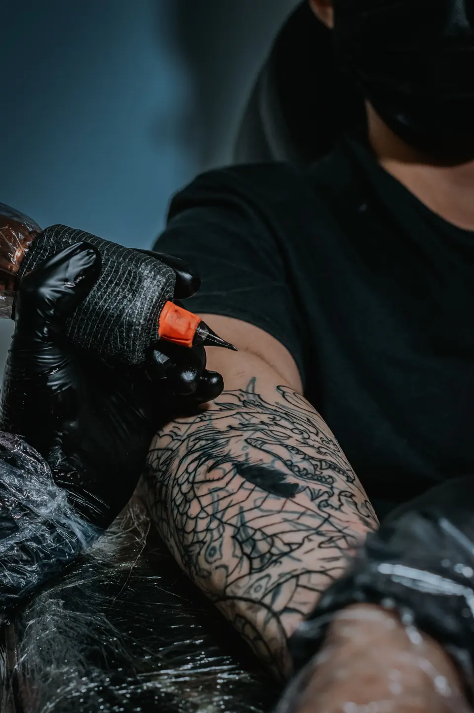

Tatuagem como linguagem. Arte com intenção. Desenhos exclusivos em fine line, blackwork, oriental e cor, criados a partir da sua história para durar a vida inteira.
A NERIVA é um estúdio pequeno, de portas fechadas, onde cada tatuagem começa numa conversa. Tratamos o desenho como linguagem: ele precisa dizer algo, e dizer bem, na sua pele por muito tempo.

Dragão oriental — linework, sessão 1 de 3Yumi Okada
Trabalhamos só com hora marcada, um cliente por vez em cada estação. Sem vitrine de flash e sem pressa: o tempo da sessão é o tempo que o traço pede.
Horário
Segunda a sexta
10h – 20h
Sábado
10h – 18h
Domingo
Fechado
Biossegurança
Agulhas e materiais descartáveis, esterilização em autoclave e alvará sanitário em dia.
Pelo formulário desta página ou pelo WhatsApp. Você envia a ideia e nós retornamos com disponibilidade e uma estimativa de valor em até 48 horas úteis.
Vocês fazem desenhos exclusivos?
Sim. Todo projeto é desenhado para você e para a região escolhida. Não repetimos desenhos autorais e não copiamos trabalhos de outros artistas; referências servem de ponto de partida.
Quanto custa uma tatuagem?
Depende de tamanho, complexidade, região e número de sessões. O valor mínimo é R$ 350, e o orçamento final sai na conversa de desenho, sem surpresa no dia.
Como me preparo para a sessão?
Durma bem, faça uma refeição completa e evite álcool nas 24 horas anteriores. Venha com roupa que deixe a região livre e com a pele hidratada, sem bronzeado recente.
Quais são os cuidados depois?
Lave com sabonete neutro, seque sem esfregar e aplique uma camada fina de pomada cicatrizante por cerca de 15 dias. Evite sol, piscina e mar até a pele fechar.
Existe idade mínima?
Sim: 18 anos, com documento oficial com foto. Não tatuamos menores de idade, mesmo com autorização dos responsáveis.
N.08 Sob agendamento
Conte sua ideia.
Quanto mais detalhes, melhor o orçamento. Respondemos em até 48 horas úteis, por e-mail ou WhatsApp, como você preferir.